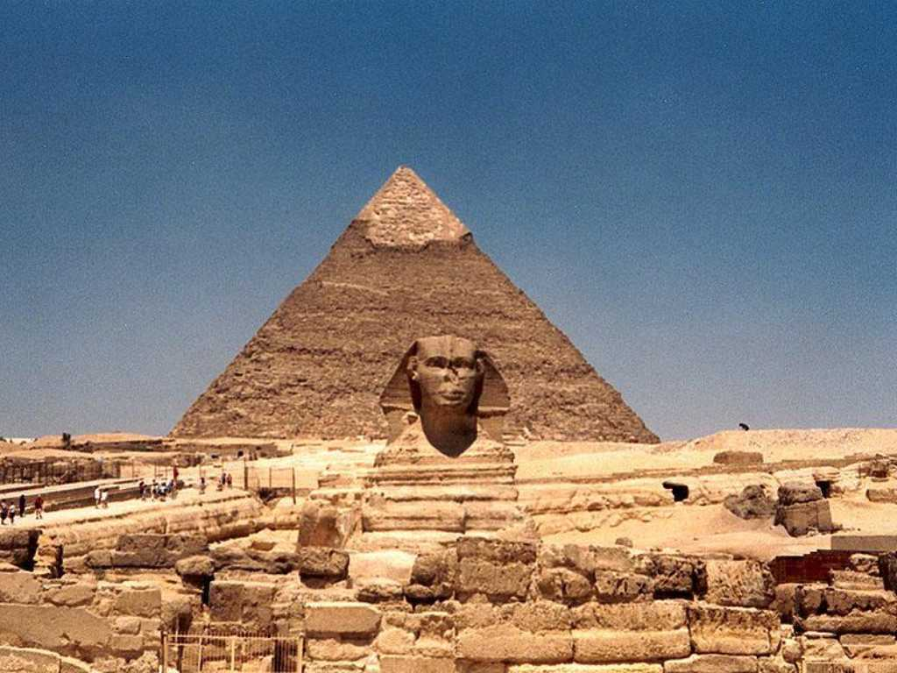

Pyramid Sphinx Giza
第４王朝B.C.２５５０年頃創建されたクフ王のピラミッドは高さ１４６ｍ底辺２３０ｍ平均２.5ｔの石材を２３０万個積み上げたその大きさには驚かされる B.C.２５００年頃創建されたクフ王の息子カフラー王のピラミッドは高さ１４１ｍ底辺２１５ｍで手前に河岸神殿とスフィンクスを配する壮大なものでスフィンクスは王権の象徴であるライオンの体にファラオの顔を刻んだ守り神である カフラー王の息子メンカウラー王のピラミッドは高さ６２ｍ底辺１０８ｍと小規模になったが遥かナイル川上流で切り出された赤色花崗岩を多く用いている イスタンブールからＢ７３７でカイロ国際空港に着陸寸前旋回したときに上空から見たピラミッド群は美しかった